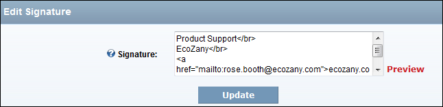
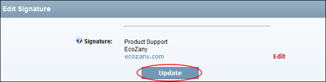

Editing your Forum Signature
How to edit your forum signature using the Forum module.
- Select My Settings from the module actions menu - OR - Click the My Settings link. This opens the User Settings page. The Control Panel > Overview window is displayed.
- In the right-hand panel, select Profile > Edit Signature. This displays the Edit Signature page.

- In the Signature text box, add/edit your signature. Basic HTML formatting may be disabled.
- Optional. Click the Preview link to preview the signature. This displays a preview of the signature on this page.
- Click the Edit link to edit this signature.
- Click the Update button.

Editing Your Signature (This image displays Signature in Preview mode)